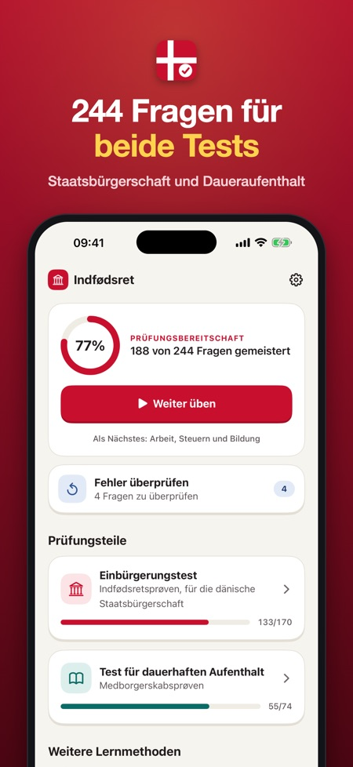
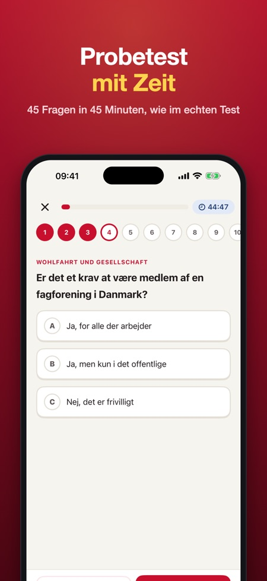
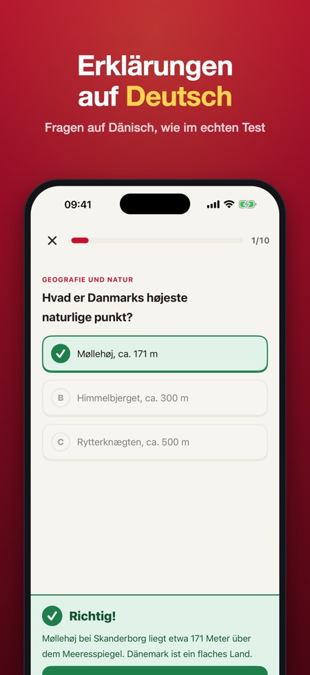

Indfødsret & Daueraufenthalt. 244 Übungsfragen für beide dänischen Tests. Fragen auf Dänisch, Erklärungen auf Deutsch. Probeprüfungen mit Zeit und der 4-von-5-Werte-Regel.



Bereite dich auf den dänischen Einbürgerungstest (indfødsretsprøven) und den Test für den Daueraufenthalt (medborgerskabsprøven) vor – mit 244 Fragen. Einmal zahlen, kein Abo.
FRAGEN AUF DÄNISCH, ERKLÄRUNGEN AUF DEUTSCH
Wie im echten Test ist jede Frage auf Dänisch. Nach jeder Antwort liest du auf Deutsch, warum sie richtig oder falsch ist – so lernst du Sprache und Fakten zugleich.
DAS IST DRIN
• Einbürgerungstest: 148 Fragen zu dänischer Geschichte, Verfassung und Demokratie, Wohlfahrt und Gesellschaft, Kultur und Traditionen, Geografie und Dänemark in der Welt
• Einbürgerungstest: 22 Fragen zu dänischen Werten
• Daueraufenthaltstest: 74 Fragen zu Alltag, Demokratie, Rechten und Pflichten sowie Arbeit, Steuern und Bildung
• Probeprüfungen mit Zeit in den offiziellen Formaten: 45 Fragen in 45 Minuten (bestanden mit 36 richtigen und mindestens 4 von 5 Wertefragen) und 25 Fragen in 30 Minuten (bestanden mit 20 richtigen)
• Fehler kommen wieder, bis du sie zweimal hintereinander richtig beantwortest
• Nach der Probeprüfung zum Einbürgerungstest siehst du, ob du über der sicheren Grenze von 36 aus 40 liegst (die 5 aktuellen Fragen lassen sich nicht üben)
• Fragen und Antworten auf Dänisch vorlesen lassen
• Fortschritt pro Thema
• Countdown bis zu deinem Prüfungstermin und auf Wunsch eine tägliche Erinnerung
FAIRER PREIS
Teste ein Thema und eine Probeprüfung pro Test ohne Kauf. Schalte alles mit einem Kauf frei. Kein Abo, keine Werbung, kein Konto. Funktioniert offline.
Hinweis: 5 Fragen im Einbürgerungstest betreffen aktuelle Ereignisse und lassen sich nicht vorbereiten. Die Probeprüfung nutzt stattdessen Fragen aus dem Lernstoff.
Diese App ist unabhängig und steht in keiner Verbindung zu SIRI, dem Ministerium oder der dänischen Regierung. Alle Fragen sind unsere eigenen, basierend auf den öffentlichen Prüfungsthemen. Die Probeprüfung dient der Übung; der echte Test kann abweichen.